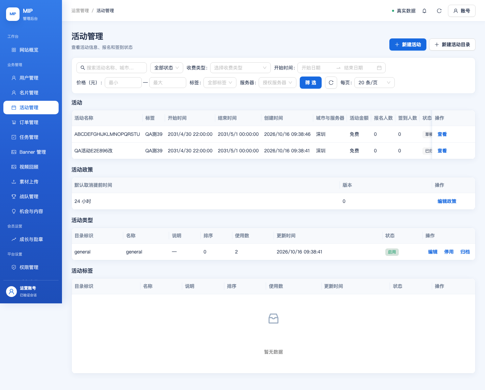
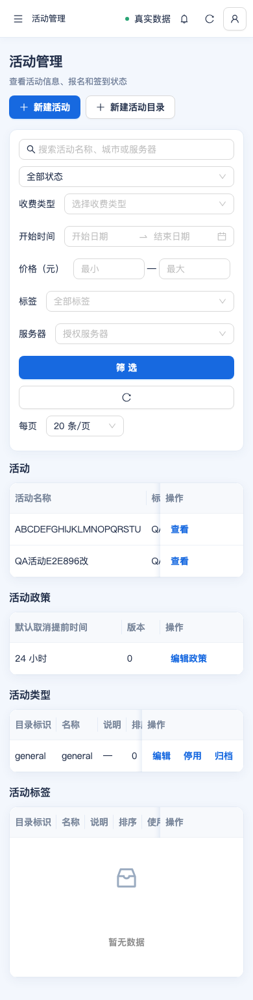

MIP 活动模块 · 验收指引（人工走查）
2026-10-16 · 逐项列出「修改前 / 修改后 / 操作步骤 / 期望结果」。配套：阶段报告 report.html。
0. 三步开始验收
- 打开（两环境已一致，任选其一）：生产
https://admin.mip.cool/#/events· 测试https://test.admin.mip.cool/#/events - 登录：账号
18819253403（密码用你提供的那份，本文不写入，避免入库）。 - 对照下面第 2 节的 A–F 逐项走查；每项给了「修改前 vs 修改后」和期望结果。
1. 环境与结果
| 环境 | 地址 | L2（API） | L3（浏览器） |
|---|---|---|---|
| 生产 | admin.mip.cool | 12/12 | 5/5 |
| 测试 | test.admin.mip.cool | 12/12 | 5/5 |
2. 验收清单（A–F）
A. 订单详情 · 已签到活动订单的「退款入口」
修改前非平台超管在「已签到」的活动订单上仍看到「提交退款」；点了必然被服务端拒绝（
EVENT_REFUND_CHECKIN_ACTIVE），等于白点一次。修改后不再显示「提交退款」，改为禁用按钮 + 原因：「该报名已签到，退款仅限平台超管处理」。
- 进入「订单管理」列表，筛选/找到一笔 活动订单，且该用户报名状态为已签到。
- 打开该订单详情，看右侧/底部动作栏。
期望：动作栏没有可点的「提交退款」；若有按钮，是灰色禁用并带原因文案。边界：平台超管（PLATFORM_OWNER）在该单上仍可「提交退款」（保持原例外能力）。
B. 活动详情 ·「报名与参与人」名单
修改前列：姓名 / 城市 / 手机状态 / 报名时间 / 支付状态 / 实付金额 / 已退款 / 签到时间 / 报名状态 / 异常原因。
修改后新增两列：来源（用户报名 / 运营补录）、角色标记。
- 「活动管理」列表 → 点开任一活动 → 详情抽屉里找到「报名与参与人」区块。
期望：表头能看到「来源」和「角色标记」；「来源」对普通报名显示「用户报名」。
C. 活动详情 ·「活动反馈明细」健壮性
修改前反馈接口若返回非空但缺少展示字段，会抛错，整个活动抽屉变成错误页。
修改后反馈区降级为占位并只在区块顶部提示「部分反馈字段缺失，已按占位显示…」，正文与其它区块照常显示。
- 正常数据下打开活动详情，确认抽屉整体正常、反馈区无异常提示即可。
期望：正常态无提示、页面不报错；异常数据（我不会构造：只由自动化的合同测试覆盖）也不会拖垮整页。
D. 活动详情 ·「参与情况」统计失败可见
修改前统计接口失败时静默显示一堆「—」，看起来像“没有数据”。
修改后区块顶部显示「统计数据加载失败，请重试；活动资料已成功加载。」
- 正常态打开活动详情即可（失败态较难手工触发）。
期望：正常态无提示；有数据时数值正常显示。
E. 活动创建 / 编辑表单 ·「地图坐标」
修改前表单里有「地图坐标（选填）」字段和一个「打开坐标拾取器」链接。
修改后整块隐藏（代码保留，客户有需求再启用）。
- 「活动管理」→ 新建活动 / 编辑活动 → 浏览整个表单。
期望：找不到任何坐标/地图字段（编辑历史活动时，已存坐标不会显示、也不会被清空）。
F. 活动名称与富文本（回归确认）
既有规则新建活动名称 ≤20 字；描述必填；富文本支持加粗/斜体/下划线/列表/对齐/插图。
回归以上保持；测试环境此前后端落后，现已同步，与生产一致。
- 新建活动，输入 21 字名称 → 保存被拒（提示“活动名称最多 20 个字符”）。
- 描述留空 → 被拒。
- 在描述里加粗/加列表/居中/插图 → 保存 → 重新打开，格式保持。
期望：三项均符合。两个环境行为一致。
3. 自动化验收（我跑，或你跑）
node scripts/qa/admin-event-e2e.mjs --origin=https://test.admin.mip.cool→ 12/12node scripts/qa/admin-ui-e2e.mjs --origin=https://test.admin.mip.cool→ 5/5- 把
--origin换成https://admin.mip.cool即验生产。
4. 现状截图（测试环境）


5. 不在本次人工验收范围
- 真机项：扫码签到、微信支付、小程序体验版 —— 需真机，单列。
- 未完成项（E06 支付/签到筛选与导出、E08 补签原因、E09 统计下钻/埋点）—— 见 阶段报告第 9 节。